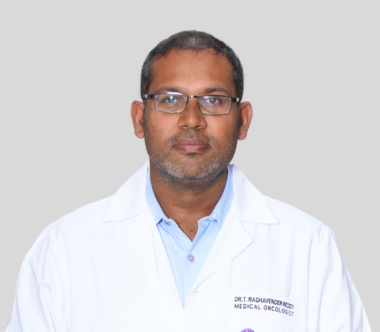

క్యాన్సర్ ఉన్నవారిని చూసుకోవడం: సంరక్షకుల కోసం ఒక మార్గదర్శి Caring for someone with cancer: a caregiver's guide
మీ తల్లిదండ్రులు, జీవిత భాగస్వామి లేదా దగ్గరి బంధువు రేడియేషన్, కీమో చికిత్స తీసుకుంటుంటే, ఇంట్లో రోజువారీ సంరక్షణ ఎక్కువగా మీ చేతుల్లోనే ఉంటుంది. ఇది భయం, అలసటతో కూడిన పని. నేను డా. టి. రఘవేందర్ రెడ్డి, రేడియేషన్ మరియు మెడికల్ ఆంకాలజిస్ట్. ఈ పేజీలో, చికిత్స వారాల్లో ఇంట్లో ఎలా సహాయం చేయాలో, ఎప్పుడు వెంటనే డాక్టర్ను సంప్రదించాలో ఆచరణాత్మకంగా వివరిస్తాను. If your parent, spouse or a close relative is going through radiation and chemotherapy, the day-to-day care at home falls largely on you. It is frightening and tiring work. I am Dr. T. Raghavender Reddy, a radiation and medical oncologist. On this page I explain, in practical terms, how to help at home through the weeks of treatment, and when to contact the doctor without waiting.
ఇంట్లో సంరక్షణ అంటే: ప్రతి చికిత్స అపాయింట్మెంట్కు తీసుకెళ్లడం, మందులు సమయానికి ఇవ్వడం, చిన్న చిన్న పౌష్టిక భోజనం, తగినన్ని ద్రవాలు, రేడియేషన్ ఇచ్చిన చర్మాన్ని మృదువుగా చూసుకోవడం. కొత్త లక్షణాలను తేదీతో రాసుకోండి, ఏ ప్రమాద సంకేతాలు వెంటనే డాక్టర్కు కాల్ చేయించాలో తెలుసుకోండి. ఎక్కువ దుష్ప్రభావాలను సపోర్టివ్ కేర్తో నిర్వహించవచ్చు. మీ స్థిరత్వం, ఓర్పు చికిత్స అంత ముఖ్యం. Home care means helping them keep every treatment appointment, giving medicines on time, offering small nourishing meals and enough fluids, and caring gently for the skin in the radiation area. Note any new symptom with the date, and learn which red flags mean you call the doctor at once. Most side effects are managed with supportive care, and your steadiness matters as much as the treatment.
ఒక విషయం మొదట చెప్తాను. చాలా కుటుంబాలు చికిత్స మొదలయ్యాక తికమకపడతారు, ఎందుకంటే ఎవరూ వాళ్లకు ఇంట్లో ఏం చేయాలో సరిగా చెప్పరు. మీరు ఒంటరి కాదు, ఇది నేర్చుకోగలిగే పని. కింద ఉన్నవి సాధారణ సూచనలు మాత్రమే. మీ వారి స్థితిని బట్టి, చికిత్స బృందం ఇచ్చే నిర్దిష్ట సలహాలే చివరి మాట. Let me say one thing first. Many families feel lost once treatment starts, because no one tells them clearly what to do at home. You are not alone in this, and it is a skill you can learn. What follows are general pointers only. The specific advice your treating team gives, for your person and their situation, is always the final word.
రేడియేషన్ ఇచ్చిన చోట చర్మ సంరక్షణSkin care in the radiation area
రేడియేషన్ ఇచ్చే ప్రాంతంలో చర్మం వారాలు గడిచేకొద్దీ ఎర్రబడవచ్చు, పొడిగా, మంటగా అనిపించవచ్చు, ఎండకు తాకిన చర్మంలా. ఇది సాధారణం, మెల్లగా వస్తుంది. మీరు చేయగలిగిన మృదువైన సంరక్షణ ముఖ్యమైనది. The skin in the treated area can slowly become red, dry and sore over the weeks, a bit like sunburned skin. This is common and builds up gradually. The gentle care you give it matters.
- గోరువెచ్చని నీరు, మృదువైన సబ్బుతో మెల్లగా కడగండి; రుద్దకుండా తట్టి ఆరబెట్టండిWash gently with lukewarm water and a mild soap; pat dry, do not rub
- వదులైన కాటన్ దుస్తులు వేయించండి; ఆ ప్రాంతాన్ని నేరుగా ఎండకు తాకనివ్వకండిUse loose cotton clothing; keep the area out of direct sun
- రేడియేషన్ బృందం ఆమోదించని ఏ క్రీమ్, నూనె, పౌడర్, ఇంటి చిట్కా ఆ చర్మంపై పెట్టకండిDo not put any cream, oil, powder or home remedy on it unless the radiation team approved it
- వేడి లేదా ఐస్ ప్యాక్లు పెట్టకండి; గుర్తు పెట్టిన గీతలను తుడవకండిNo hot packs or ice packs; do not wipe off the marking lines
నా దగ్గర నేను ఎప్పుడూ చెప్పేది: చర్మంపై ఏదైనా రాయడానికి ముందు రేడియేషన్ టీమ్ను అడగండి, ఎందుకంటే కొన్ని పదార్థాలు రేడియేషన్ ప్రభావాన్ని మార్చగలవు. చర్మం పగిలితే, నీరు కారితే, లేదా చాలా నొప్పిగా ఉంటే, తదుపరి సెషన్ వరకు ఆగకుండా టీమ్కు చెప్పండి, వాళ్ళు సరైన లేపనం ఇస్తారు. What I always tell families is this: ask the radiation team before putting anything on the skin, because some products can change how the radiation behaves. If the skin breaks, weeps, or becomes very painful, tell the team rather than waiting for the next session. They will give the right ointment.
అలసట, ఆకలి, వికారం ఇంట్లో నిర్వహించడంManaging tiredness, appetite and nausea at home
అలసట రేడియేషన్, కీమో రెండింటిలోనూ చాలా సాధారణం, చికిత్స చివరికి ఎక్కువ అవుతుంది. ఇది బద్ధకం కాదు, శరీరం కోలుకునే పని చేస్తోంది. విశ్రాంతి తీసుకోనివ్వండి, కానీ ఓపిక ఉన్నప్పుడు ఇంట్లో కొంచెం నడవడం శక్తికి, మానసిక స్థితికి సహాయపడుతుంది. Tiredness is very common with both radiation and chemotherapy, and it builds towards the end of treatment. It is not laziness, the body is doing the work of recovering. Let them rest, but a short walk inside the house when they feel up to it helps both energy and mood.
ఆకలి తగ్గడం, రుచి మారడం కూడా సాధారణమే. మూడు పెద్ద భోజనాల బదులు, తరచుగా చిన్న చిన్న ఆహారం ఇవ్వండి. పప్పు, గుడ్లు, పాలు, పనీర్ లాంటి తేలికైన ప్రోటీన్ కలపండి. రోజంతా నీళ్లు, మజ్జిగ, కొబ్బరి నీళ్లు సిప్ చేస్తూ ఉండేలా చూడండి. వికారం ఉంటే, డాక్టర్ ఇచ్చిన మందును సమయానికి ఇవ్వండి; ఘాటైన, నూనె ఎక్కువ ఉన్న ఆహారం, బలమైన వాసనలు వికారాన్ని పెంచుతాయి, వాటిని తగ్గించండి. Loss of appetite and a changed sense of taste are also common. Instead of three big meals, offer small amounts more often. Add easy protein like dal, eggs, milk or paneer. Keep sips of water, buttermilk or coconut water going through the day. If there is nausea, give the anti-nausea medicine the doctor prescribed on time; strong-smelling, oily or very spicy food makes nausea worse, so ease back on those.
నోరు, గొంతు సంరక్షణ ఆ ప్రాంతానికి చికిత్స అయితేMouth and throat care if that area is treated
రేడియేషన్ నోరు లేదా గొంతు దగ్గర ఇస్తే, చివరి వారాల్లో మింగడం నొప్పిగా మారవచ్చు, నోటిలో పుండ్లు రావచ్చు. మెత్తని, గోరువెచ్చని, ఘాటు లేని ఆహారం ఇవ్వండి. నీళ్లు సిప్ చేస్తూ గొంతు తడిగా ఉంచండి. బృందం సలహా ఇస్తే, మృదువైన నోటి పుక్కిలింతలు చేయించండి. చాలా వేడి, ఉప్పగా, కారంగా, పుల్లగా ఉన్న ఆహారం, మరియు పొగాకు, మద్యం పూర్తిగా మానేయించండి, అవి పుండ్లను తీవ్రం చేస్తాయి. When radiation is near the mouth or throat, swallowing can become sore in the later weeks and mouth sores can appear. Offer soft, lukewarm, non-spicy food. Keep the throat moist with sips of water. If the team advises it, help with gentle mouth rinses. Avoid very hot, salty, spicy or acidic food, and stop tobacco and alcohol completely, as these make sores worse.
నోటి శుభ్రత ఇక్కడ చాలా ముఖ్యం. మృదువైన బ్రష్తో మెల్లగా శుభ్రం చేయించండి. మింగడం బాగా కష్టమై ద్రవాలు కూడా దిగకపోతే, బరువు పడిపోతే, చికిత్స బృందానికి ఆ రోజే చెప్పండి, ఎందుకంటే పోషణ, ద్రవాలు అందించడానికి వాళ్ళు సహాయం చేయగలరు. Mouth hygiene matters a lot here. Help them clean gently with a soft brush. If swallowing becomes so hard that even liquids will not go down, or weight is dropping, tell the treating team that same day, because they can help with ways to keep nutrition and fluids up.
పోషణ మరియు ద్రవాల ప్రాథమిక సూత్రాలుNutrition and hydration basics
చికిత్స సమయంలో శరీరానికి కోలుకోవడానికి శక్తి, ప్రోటీన్ అవసరం. ఖరీదైన ప్రత్యేక ఆహారాలు అవసరం లేదు. ఇంట్లో దొరికే సాధారణ, శుభ్రమైన, తాజా ఆహారమే సరిపోతుంది. మంచి నీళ్లు తాగించడం, రోజంతా కొద్ది కొద్దిగా ద్రవాలు ఇవ్వడం ముఖ్యం. కిడ్నీలను కాపాడటానికి, కీమో మందులను శరీరం బయటకు పంపడానికి ద్రవాలు సహాయపడతాయి. During treatment the body needs energy and protein to recover. You do not need expensive special foods. Ordinary, clean, freshly cooked home food is enough. Safe drinking water and steady fluids through the day matter. Fluids help protect the kidneys and help the body clear the chemotherapy medicines.
ఒక ఆచరణాత్మక సలహా: కీమో సమయంలో రోగనిరోధక శక్తి తగ్గవచ్చు, కాబట్టి బాగా ఉడికించిన, తాజా ఆహారం ఇవ్వండి; బయటి, పాత, శుభ్రం కాని ఆహారాన్ని తప్పించండి. ఏదైనా ప్రత్యేక ఆహార నియమం, ప్రోటీన్ పౌడర్, లేదా టానిక్ ఇవ్వాలనుకుంటే, ముందు చికిత్స బృందాన్ని అడగండి, ఎందుకంటే కొన్ని చికిత్సకు అడ్డుపడవచ్చు. ఏ సప్లిమెంట్ లేదా ఆయుర్వేద మందునూ సొంతగా మొదలుపెట్టవద్దు. One practical point: chemotherapy can lower immunity, so give well-cooked, fresh food and avoid outside, stale or unhygienic food. If you want to give any special diet, protein powder, or tonic, ask the treating team first, because some can interfere with treatment. Do not start any supplement or alternative medicine on your own.
రేడియేషన్ కోర్సు మధ్యలో సెషన్లు ఎందుకు మిస్ చేయకూడదుWhy not to miss radiation sessions
రేడియేషన్ సాధారణంగా రోజూ కొద్దిసేపు, వరుసగా కొన్ని వారాల పాటు ఇస్తారు. ఈ క్రమం యాదృచ్ఛికం కాదు, దానికి ఒక శాస్త్రీయ కారణం ఉంది. ప్రతి సెషన్ క్యాన్సర్ కణాలపై మునుపటి సెషన్ ప్రభావంపై నిర్మిస్తుంది. సెషన్లు మిస్ అయితే లేదా మధ్యలో ఆపితే, ఆ ప్రభావం బలహీనపడవచ్చు. Radiation is usually given as a short session daily, over several weeks in a row. That schedule is not random, it has a scientific reason. Each session builds on the effect of the one before it on the cancer cells. When sessions are missed, or the course is broken in the middle, that effect can weaken.
అందుకే సంరక్షకుడిగా మీ ఒక పెద్ద పని, ప్రయాణం, బస, వాహనం ముందే ప్లాన్ చేసి ప్రతి సెషన్కు సమయానికి తీసుకెళ్లడం. జిల్లా నుండి వస్తే, మొత్తం కోర్సు అయ్యేవరకు దగ్గర్లో బస గురించి ముందే ఆలోచించండి. రోగి జ్వరం, నీరసం లేదా మరో కారణంతో సెషన్కు వెళ్లలేకపోతే, సొంతగా నిర్ణయించకుండా రేడియేషన్ టీమ్కు ఫోన్ చేసి అడగండి, వాళ్ళు ఏం చేయాలో చెప్తారు. So one of your big jobs as a caregiver is planning travel, stay and transport in advance, and getting them to every session on time. If you are coming from a district, think ahead about staying close by until the course is finished. If the patient cannot make a session because of fever, weakness or another reason, do not decide on your own, phone the radiation team and ask, they will tell you what to do.
భావోద్వేగ సహాయంEmotional support
క్యాన్సర్ చికిత్స శరీరాన్నే కాదు, మనసునూ అలసిస్తుంది. రోగి భయం, కోపం, నిరాశ, నిద్రలేమి అనుభవించవచ్చు. ఇది బలహీనత కాదు, సాధారణం. మీరు చేయగలిగిన గొప్ప పని, ఓపికగా వినడం, ఎక్కువ సలహాలు ఇవ్వకుండా తోడుగా ఉండటం. చిన్న చిన్న విషయాలు, ఇష్టమైన మనుషులతో మాట్లాడటం, మామూలు దినచర్యను కొంత నిలబెట్టడం సహాయపడతాయి. Cancer treatment tires the mind, not only the body. The patient may feel fear, anger, low mood or trouble sleeping. This is not weakness, it is normal. The best thing you can do is listen patiently and stay beside them without rushing in with advice. Small things help, talking with people they love, and keeping some part of the normal daily routine going.
ఒక మాట నేను రోగుల కుటుంబాలకు తరచుగా చెబుతాను: మానసిక స్థితి బాగా దిగజారితే, ఎక్కువ నిరాశగా, ఉపయోగం లేదన్నట్లు మాట్లాడితే, దాన్ని మామూలుగా తీసుకోకండి. చికిత్స బృందానికి చెప్పండి, ఎందుకంటే దీనికి కూడా సహాయం, చికిత్స ఉన్నాయి. మనసుకు సహాయం చేయడం కూడా క్యాన్సర్ సంరక్షణలో భాగమే. One thing I often tell families: if the mood drops badly, if they talk in a very hopeless way or as though there is no point, do not treat it as ordinary. Tell the treating team, because there is help and treatment for this too. Caring for the mind is part of cancer care, not separate from it.
ఎప్పుడు డాక్టర్కు కాల్ చేయాలి, ఎప్పుడు ఆసుపత్రికి వెళ్లాలిWhen to call the doctor, when to go to hospital
కింది వాటిలో ఏదైనా కనిపిస్తే, ఇది తదుపరి అపాయింట్మెంట్ వరకు వేచి ఉండే విషయం కాదు. వెంటనే డాక్టర్కు కాల్ చేయండి, లేదా దగ్గరి ఆసుపత్రికి ఇప్పుడే వెళ్లండి: If you see any of the following, this is not something to wait for the next appointment about. Call the doctor at once, or go to the nearest hospital now:
- జ్వరం 100.4 F (38 C) లేదా అంతకంటే ఎక్కువ, ముఖ్యంగా కీమో సమయంలోA fever of 100.4 F (38 C) or above, especially during chemotherapy
- ఆగని వాంతులు లేదా విరేచనాలు, ద్రవాలు కూడా దిగకపోవడంUncontrolled vomiting or diarrhoea, unable to keep fluids down
- ఆయాసం, శ్వాస ఇబ్బంది, లేదా ఛాతీ నొప్పిBreathlessness, difficulty breathing, or chest pain
- ఎక్కువ రక్తస్రావం, వాంతిలో లేదా మలంలో రక్తంHeavy bleeding, or blood in vomit or stool
- గందరగోళం, మెలకువ ఒక్కసారిగా తగ్గడం, లేదా పడిపోవడంConfusion, a sudden drop in alertness, or a fall
- మూత్రం చాలా తక్కువ రావడం, తీవ్రమైన నీరసంPassing very little urine, or severe weakness
సంరక్షకుడిగా మిమ్మల్ని మీరు చూసుకోండిCaregiver self-care
ఇది చాలామంది మర్చిపోయే భాగం. మీరు అలసిపోతే, మీరు సరిగా చూసుకోలేరు. సంరక్షకుల అలసట నిజం. భారాన్ని కుటుంబంలో పంచుకోండి, ఆసుపత్రి సందర్శనలకు వంతులు వేసుకోండి, వీలున్నప్పుడు నిద్రపోండి, మీరూ సరిగా తినండి. భయం, దుఃఖం అనిపించడం సహజం, దాన్ని దాచుకోవద్దు. This is the part many people forget. If you wear yourself out, you cannot care well. Caregiver tiredness is real. Share the load within the family, take turns for hospital visits, sleep when you can, and eat properly yourself. It is natural to feel fear and grief, do not hide it.
ఒక ఆచరణాత్మక చిట్కా: అన్ని రిపోర్టులు, స్కాన్లు, మందుల జాబితా ఒకే ఫైల్లో ఉంచండి. అత్యవసరంలో వెతుక్కోవాల్సిన అవసరం ఉండదు. మీ ఆందోళనలను చికిత్స బృందంతో మాట్లాడటం బలహీనత కాదు, మంచి సంరక్షణలో భాగం. A practical tip: keep all reports, scans and the medicine list in one folder. Then you are not searching during an emergency. Talking to the treating team about your own worries is not a weakness, it is part of good care.
మీ వారి రిపోర్టులు సమీక్ష కోసం పంపండి.Send the patient's reports for review.
మీ వివరాలు ఇవ్వండి, పని వేళల్లో మా టీమ్ మిమ్మల్ని కాల్ చేస్తుంది. Submit your details and my team will call you during working hours.

మీ డాక్టర్ను అడగాల్సిన ప్రశ్నలుQuestions to ask your doctor
- ఇంట్లో ఏ దుష్ప్రభావాలు రావచ్చు, వాటిని ఎలా నిర్వహించాలి?What side effects can come at home, and how do we manage them?
- రేడియేషన్ ఇచ్చిన చర్మంపై ఏ లేపనం వాడవచ్చు, ఏది వాడకూడదు?What can we put on the radiation skin, and what must we avoid?
- ఏ లక్షణాలు వచ్చినప్పుడు మీకు వెంటనే ఫోన్ చేయాలి?Which symptoms mean we should phone you straight away?
- ఆకలి, మింగడం కష్టమైతే పోషణ ఎలా కొనసాగించాలి?How do we keep up nutrition if appetite or swallowing become hard?
- అత్యవసరంలో రోజులో, రాత్రి వేళ ఎవరిని సంప్రదించాలి?Who do we contact in an emergency, during the day and at night?
- సెషన్కు రాలేకపోతే ఏం చేయాలి?What should we do if we cannot make a session?